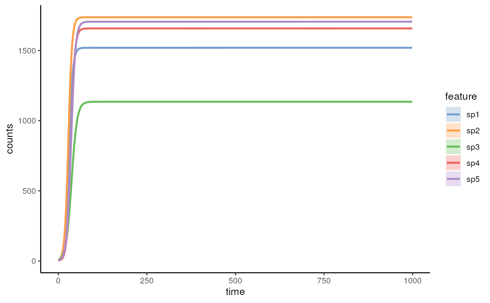

Simulates a community time series using the logistic model.
The change rate of the species was defined as
dx/dt = b*x*(1-(x/k))*rN - dr*x, where
b is the vector of growth rates,
x is the vector of initial species abundances,
k is the vector of maximum carrying capacities,
rN is a random number ranged from 0 to 1 which changes in each time step,
dr is the vector of constant death rates.
Also, the vectors of initial dead species abundances can be set.
The number of species will be set to 0 if the dead species abundances
surpass the alive species abundances.
simulateStochasticLogistic(
n_species,
b = runif(n = n_species, min = 0.1, max = 0.2),
k = runif(n = n_species, min = 1000, max = 2000),
dr = runif(n = n_species, min = 5e-04, max = 0.0025),
x = runif(n = n_species, min = 0.1, max = 10),
sigma_drift = 0.001,
sigma_epoch = 0.1,
sigma_external = 0.3,
p_epoch = 0.001,
t_external_events = c(0, 240, 480),
t_external_durations = c(0, 1, 1),
stochastic = TRUE,
t_end = 1000,
...
)integer number of species
numeric growth rates
(default: b = runif(n = n_species, min = 0.1, max = 0.2))
numeric value of carrying capacities
(default: k = runif(n = n_species, min = 1000, max = 2000))
numeric value of death rates
(default: dr = runif(n = n_species, min = 0.0005, max = 0.0025))
numeric initial abundances
(default: x = runif(n = n_species, min = 0.1, max = 10))
numeric degree of drift (turnover of species) in each
time step.
(default: sigma_drift = 0.001)
numeric degree of epoch change of community
(default: sigma_epoch = 0.1)
numeric degree of external events/disturbances
(default: sigma_external = 0.3)
numeric value of probability/frequency of inherit periodic
changes of community (default: p_epoch = 0.001)
numeric value of starting times of external events
(default: t_external_events = c(0, 240, 480))
numeric value of durations of external events
(default: t_external_durations = c(0, 1, 1))
logical scalar choosing whether the logistic model should
be stochastic (controlled by multiplying the growth rate by a random number)
(default: stochastic = TRUE)
numeric final time of the simulation
(default: t_end = 1000)
additional parameters including 't_start', 't_step', and 't_store'
simulateStochasticLogistic returns an abundance matrix with
species abundance as rows and time points as columns
## ATTENTION: Don't set a large value to t.step, otherwise the computer won't
#give a correct solution to the logistic ODE(ordinary differential equation).
#Keeping t_step under 0.05 or 0.01 is a good practice.
#while (!exists("ExampleLogistic"))
ExampleLogistic <- simulateStochasticLogistic(n_species = 5)
#plot the calculated points
matplot(ExampleLogistic, type = "l")

#calculation by setting initial parameters explicitly
ExampleLogistic2 <- simulateStochasticLogistic(n_species = 2,
b = c(0.2, 0.1), k = c(1000, 2000), dr = c(0.001, 0.0015), x = c(3, 0.1),
sigma_drift = 0.001, sigma_epoch = 0.3, sigma_external = 0.5,p_epoch = 0.001,
t_external_events = c(100, 200, 300), t_external_durations = c(1, 2, 3),
t_start = 0, t_end = 1500, t_step = 0.01,
t_store = 1500, stochastic = TRUE)